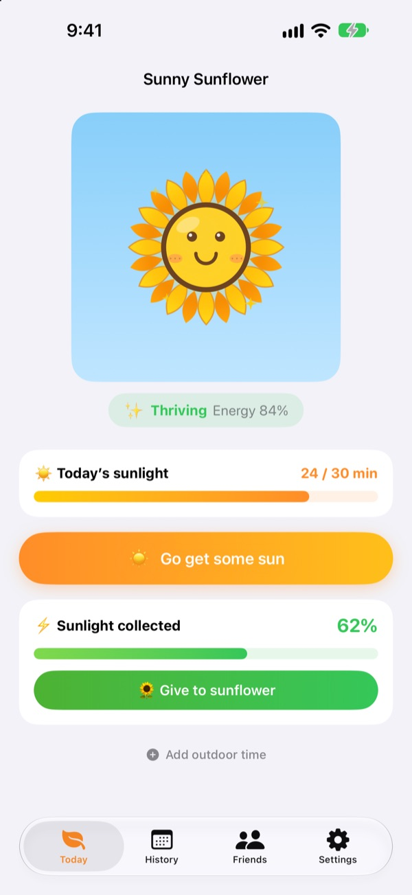
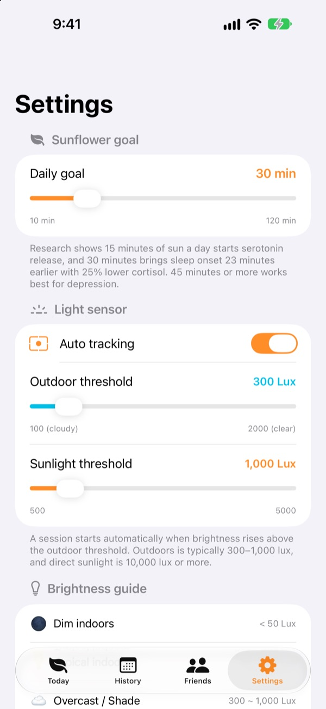
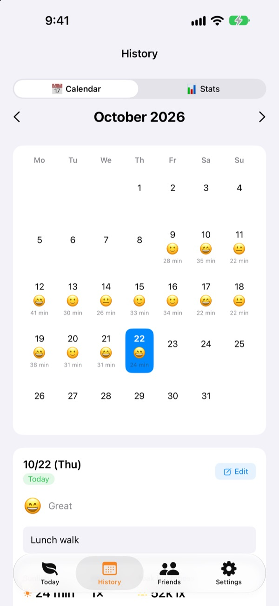
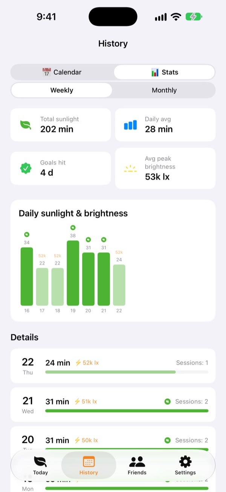

Grow a sunflower
with today's sunshine
Step outside and your sun time adds up by itself. Give the sunlight you collect to your sunflower to keep it thriving. Forget it for a few days and it starts to wilt.
Every feature is free. Your history stays on your device.

Collect some sun
Pick how bright it is and for how long, soak it up, then give it to a sunflower that's starting to droop.
How many minutes of sun did you actually get today?
A few steps on the way to work, a quick lunch run. Spend the day indoors and you only realize in the evening that you barely saw daylight. Sunny Sunflower puts your outdoor time into numbers, and your sunflower is there waiting for tomorrow's walk.
It measures on its own once you're out
Tap Go get some sun and head outside. The app reads the brightness around you from the front camera's exposure data. Once the light stays outdoor-bright for about 30 seconds, tracking begins. No photos are ever taken or saved.
After that, the sensor wakes for just 20 seconds every 2 minutes to save battery.

Keep a daily log of sun and mood
In the calendar, each day gets its sun time, a mood emoji and a short note. Spent time outside without tracking it? Use Add outdoor time to add anywhere from 5 to 120 minutes.

See your week and month at a glance
Weekly and monthly stats show the days you hit your goal and your average sun time. Set a daily goal from 10 to 120 minutes and see right on the home screen how many more minutes you need today.
Widgets on the Home Screen and Lock Screen, plus the Dynamic Island, show today's sun and how your sunflower is doing.

Three steps to start
- 1
Set a daily goal
It starts at 30 minutes. Change it anywhere from 10 to 120 in Settings.
- 2
Head out into the sun
Tap
Go get some sunand keep the app open as you step outside. It asks for camera access once. - 3
Feed your sunflower
Tap
Give to sunflowerto turn the sunlight you collected into energy.
How light turns into sunlight
- Under 300 lux
- Dim light: doesn't count as sun time
- 300 to 1,000 lux
- Outdoor/Cloudy: 1 to 3% per 10 minutes
- 1,000 to 10,000 lux
- Sunlight: 3 to 33% per 10 minutes
- 10,000 lux and up
- Strong sun: over 33% per 10 minutes
- Sunlight collected
- minutes × average lux ÷ 3,000 (up to 100% per session)
- Sunflower energy
- drops 2.5% an hour, about 60% a day
You can set the outdoor threshold anywhere from 100 to 2,000 lux in Settings. The default is 300 lux.
Questions
How does it measure sunlight?
It estimates the brightness around you from the front camera's exposure data. When the light stays outdoor-bright for a short while, tracking starts by itself. No photos are taken or saved.
Doesn't tracking drain my battery?
Once sunlight is confirmed, the sensor doesn't stay on. It wakes for about 20 seconds every 2 minutes to re-check, and a simple timer covers the rest.
My sunflower keeps wilting.
Your sunflower loses 2.5% of its energy every hour. Collect some sun, then tap Give to sunflower. On a clear day, 15 to 20 minutes in direct sun is enough to make up for a full day.
I was outside but nothing was logged.
Use Add outdoor time at the bottom of the home screen to add 5 to 120 minutes. If tracking struggles to start on cloudy days, lower the outdoor threshold in Settings.
How does the friends feature work?
When you and a friend are close (within about 10 m) and both tracking sunlight, you connect automatically. Someone new has to confirm sharing the sun first; after that it's automatic. Your petals turn colorful and fade back over 3 days, and your time together is saved in the Friends tab. Both of you need the app, plus Bluetooth and Local Network access.
Is it really free?
Yes. No ads, no purchases, every feature included. If you like it you can leave a tip in the app, but tipping doesn't unlock anything extra.
Can I back up or move my history?
Everything stays on your device with no server involved, and the last 90 days are kept. There's no separate export, but your history is included in your regular iCloud or computer backup.
How do I delete all my data?
Go to Settings > Data > Reset data in the app, or delete the app. This can't be undone.
Where do I report a bug?
Email us at the address below or open an issue at github.com/M1zz/SunlightTracker/issues. Your device model, iOS version and what happened help a lot. We usually reply within a few days.
Questions or feedback? Write to leeo@kakao.com.